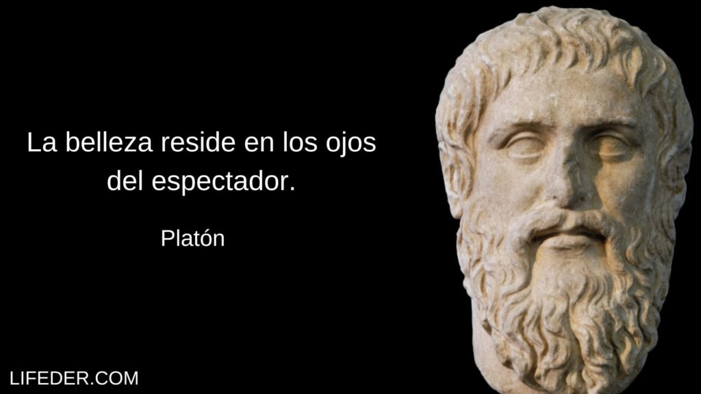

Biografía de Platón
Platón fue un filósofo griego, discípulo de Sócrates y maestro de Aristóteles. Nació en Atenas en el año 427 a.C. y murió en el año 347 a.C.
 ENCUENTRA SU BIOGFRAFIA AQUÍ
ENCUENTRA SU BIOGFRAFIA AQUÍ
PLATON Y ARISTOTELES Y SU IMPORTANCIA EN LA ESTETICA
>Platón fue un filósofo griego, discípulo de Sócrates y maestro de Aristóteles. Nació en Atenas en el año 427 a.C. y murió en el año 347 a.C.
ENCUENTRA SU BIOGFRAFIA AQUÍ
Aristóteles fue un filósofo y científico griego, discípulo de Platón y maestro de Alejandro Magno. Nació en el año 384 a.C. en Estagira y murió en el año 322 a.C.
Más información sobre AristótelesPlatón consideraba que la belleza estaba relacionada con el mundo de las Ideas y que las obras de arte eran reflejos imperfectos de esas Ideas eternas.
 Más información sobre la estética de PlatónAristóteles consideraba que la belleza dependía de la proporción, la armonía y la finalidad de las obras de arte, y desarrolló una teoría del arte en su obra "Poética".
Más información sobre la poética de Aristóteles